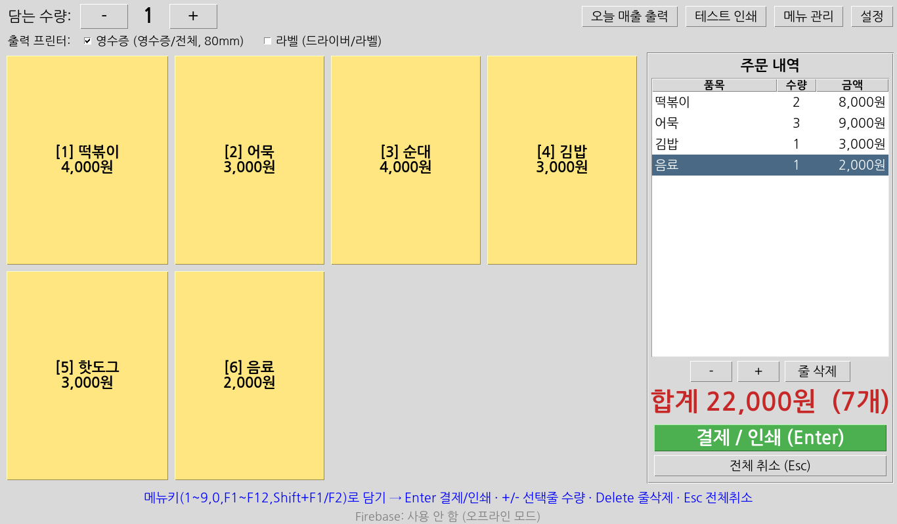
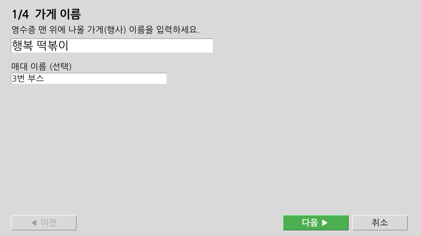
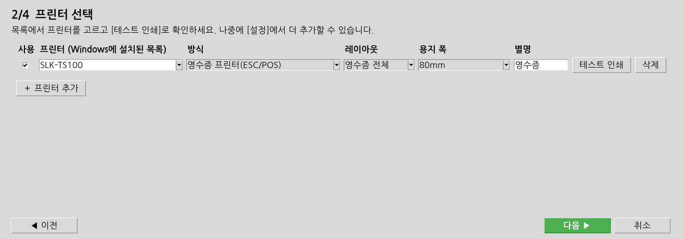
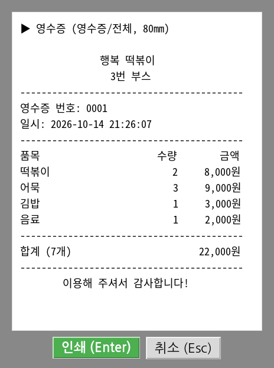
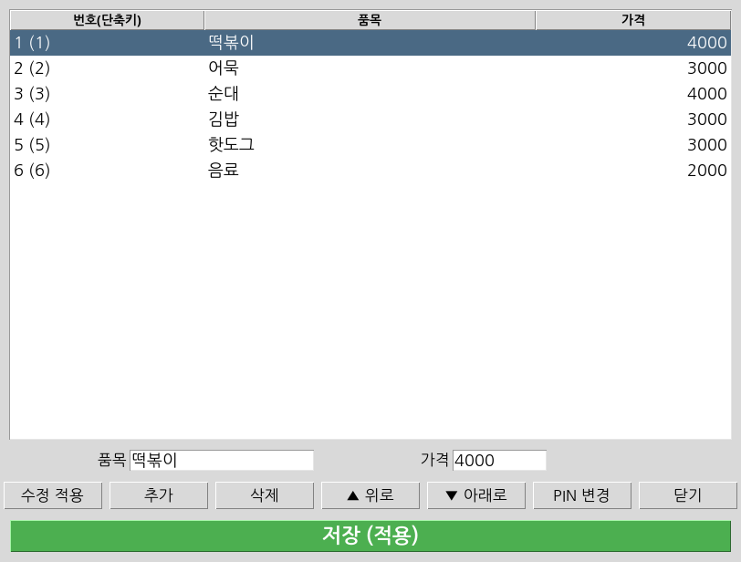
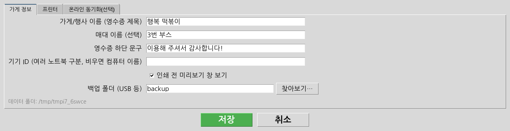
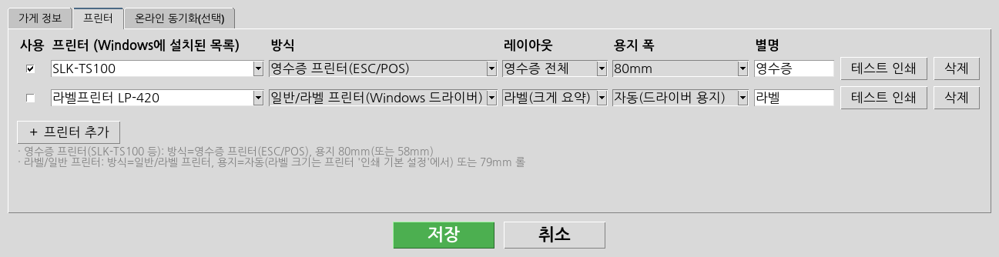

Windows 10/11 · 영수증 프린터(신화포스 SLK-TS100 등) · 라벨 프린터 지원
매장용 주문 프린터는 노트북에 영수증 프린터를 연결해, 메뉴 버튼(또는 숫자 키)만 누르면 주문 영수증을 바로 출력하는 프로그램입니다. 인터넷이 없어도 모든 기능이 동작합니다.
| 항목 | 내용 |
|---|---|
| 컴퓨터 | Windows 10 또는 11 노트북/PC (USB 포트). Python 등 다른 프로그램은 필요 없습니다. |
| 영수증 프린터 | 신화포스 SLK-TS100 등 ESC/POS 방식 감열 영수증 프린터 (80mm 또는 58mm 용지) |
| 라벨 프린터 (선택) | Windows 드라이버가 있는 라벨 프린터 또는 일반 프린터 (79mm 연속 롤지도 지원) |
| 프린터 드라이버 | 제조사 홈페이지 또는 동봉 CD 에서 설치. 프로그램보다 먼저 설치하고 USB 로 연결하세요. |
| 용지 | 감열지(영수증 롤) 또는 라벨 용지 |
배포 페이지(GitHub Releases)에서 두 가지 중 하나를 내려받습니다.
| 파일 | 설명 |
|---|---|
| FestivalReceipt-Setup.exe (설치용, 권장) | 더블클릭 → 다음 → 설치. 바탕 화면과 시작 메뉴에 "매장용 주문 프린터" 바로가기가 생깁니다. 데이터는 %APPDATA%\FestivalReceipt 에 저장됩니다. |
| FestivalReceipt-Portable.zip (포터블) | 설치 없이 사용. 압축을 풀고 FestivalReceipt.exe 실행. 같은 폴더의 data 폴더에 설정과 판매 기록이 저장되므로 USB 에 넣어 다른 노트북에서도 그대로 쓸 수 있습니다. data 폴더를 지우지 마세요. |
새로 배포된 프로그램이라 처음 실행할 때 파란색 경고 창이 나올 수 있습니다.
한 번 실행하면 다음부터는 나오지 않습니다. 공식 배포 페이지에서 받은 파일만 실행하세요.
처음 실행하면 4단계 "처음 설정" 창이 열립니다. [다음 ▶]으로 진행하세요.
영수증 맨 위에 인쇄될 가게(행사) 이름과, 필요하면 매대 이름을 입력합니다.

목록에서 프린터를 고르고 [테스트 인쇄]를 눌러 한글이 바르게 나오는지 확인합니다. SLK-TS100 같은 영수증 프린터는 방식 "영수증 프린터(ESC/POS)", 용지 80mm(또는 58mm)로 둡니다.

메뉴 관리와 설정을 열 때 쓰는 숫자 4자리 PIN 을 두 번 입력합니다. 직원이 메뉴·가격을 바꾸지 못하게 보호합니다.
"예시 메뉴"(떡볶이, 어묵 등 — 나중에 수정)로 시작하거나, "빈 메뉴"로 시작해 바로 메뉴를 입력합니다. [완료]를 누르면 판매 화면이 열립니다.
| 하고 싶은 일 | 방법 |
|---|---|
| 선택한 줄 수량 +1 / -1 | + / - 키 또는 주문 내역 아래 [＋] [－] (0 이 되면 줄 삭제). 선택이 없으면 마지막 줄 |
| 선택한 줄 삭제 | Delete 키 또는 [줄 삭제] |
| 주문 전체 취소 | Esc / Backspace 또는 [전체 취소] → 확인 |

오른쪽 위 [메뉴 관리] → PIN 입력.

| 버튼 | 기능 |
|---|---|
| 수정 적용 | 목록에서 고른 줄의 품목/가격을 아래 입력칸 내용으로 바꿉니다. |
| 추가 | "새 메뉴" 줄을 만들고 바로 선택합니다. 이름·가격 입력 후 [수정 적용]. |
| 삭제 / ▲ 위로 / ▼ 아래로 | 줄 삭제, 순서 변경 (순서 = 단축키 번호, 자동 재지정) |
| 저장 (적용) | 반드시 눌러야 판매 화면에 반영됩니다. 저장 안 한 변경이 있으면 창 제목에 "● 저장 안 된 변경 있음"이 표시되고, 닫을 때 "저장할까요?"(예/아니오/취소)를 묻습니다. |
| PIN 변경 | 현재 PIN 확인 후 새 PIN(숫자 4자리) 두 번 입력 |
오른쪽 위 [설정] → PIN 입력. [저장]하면 바로 적용됩니다 (다시 시작할 필요 없음).


| 항목 | 선택 |
|---|---|
| 프린터 | Windows 에 설치된 프린터 목록에서 선택 |
| 방식 | 영수증 프린터(ESC/POS): SLK-TS100 등 감열 영수증 프린터 (빠르고 자동 절단) 일반/라벨 프린터(Windows 드라이버): 라벨 프린터, 일반 프린터 등 드라이버가 있는 모든 프린터 |
| 레이아웃 | 영수증 전체 / 라벨(크게 요약): 가게 이름·품목·수량·합계·번호만 크게 |
| 용지 폭 | 80mm(한 줄 42칸) · 58mm(32칸) · 79mm 롤(연속 감열 롤지, 길이 자동) · 자동(드라이버에 설정한 라벨 크기) |
| 사용 / 별명 | 사용 체크 = 시작할 때 출력 대상. 별명 = 화면에 보이는 이름 |
sales\2026-10-14.csv 처럼 날짜별 파일. 엑셀로 바로 열립니다 (품목마다 한 줄, 같은 주문은 같은 번호).%APPDATA%\FestivalReceipt 입력 후 Enter (포터블은 exe 옆 data 폴더).여러 매대의 매출을 본부에서 실시간으로 보고 싶을 때 Google Firebase 로 판매 내역을 전송할 수 있습니다. 필요 없으면 꺼두세요 — 꺼도 모든 기능이 동작합니다.
%APPDATA%\FestivalReceipt 폴더를 직접 삭제하세요 (먼저 백업!).| 증상 | 해결 방법 |
|---|---|
| 한글이 깨져서(이상한 문자) 나옴 | 영수증 프린터 방식(ESC/POS)에서 발생. 프린터 제조사 유틸리티에서 코드페이지/국가를 한국어(KS5601/CP949)로 설정. 그래도 안 되면 그 프린터의 방식을 "일반/라벨 프린터(Windows 드라이버)"로 바꿔 보세요. |
| 아무것도 인쇄되지 않음 | ① 프린터 전원·USB·용지 확인 ② [설정]→프린터의 [테스트 인쇄] ③ Windows "프린터 및 스캐너"에서 대기열에 멈춘 문서 삭제, "프린터 일시 중지" 해제 ④ 노트북 재시작 |
| "프린터 이름이 잘못되었습니다" | [설정]→프린터에서 목록의 프린터를 다시 선택하세요 (드라이버를 다시 설치하면 이름이 바뀔 수 있음, 예: "SLK-TS100 (사본 1)"). |
| "오프라인" / "용지 없음" | USB 를 다시 꽂고 전원을 켠 뒤 다시 인쇄. 용지 덮개가 닫혔는지 확인. |
| 라벨 글자가 너무 작거나 잘림 | 프린터 "인쇄 기본 설정"의 용지 크기가 실제 라벨과 같은지 확인. 79mm 롤이면 [설정]에서 용지 폭을 "79mm 롤"로. |
| 영수증 폭이 맞지 않음 | 58mm 용지면 [설정]→프린터→용지 폭 58mm. |
| PIN 을 잊어버림 | 프로그램 종료 → %APPDATA%\FestivalReceipt\admin.json 파일 삭제 → 다시 실행 후 [메뉴 관리]를 열면 새 PIN 설정. (메뉴·판매 기록은 그대로) |
| 백신이 차단/삭제함 | 공식 배포 페이지에서 받은 파일이면 백신의 "예외(허용)"에 FestivalReceipt.exe 를 추가하세요. 새 프로그램이라 오진하는 경우가 있습니다. |
| "PC 보호" 창 | 3장 참고: 추가 정보 → 실행 |
| 메뉴를 바꿨는데 화면이 그대로 | 메뉴 관리에서 초록색 [저장 (적용)]을 눌렀는지 확인. |
Q. 인터넷이 꼭 필요한가요?
A. 아니요. 온라인 동기화를 쓰지 않으면 인터넷 없이 모든 기능이 동작합니다.
Q. 카드 결제나 현금영수증도 되나요?
A. 아니요. 주문 영수증(주문서) 출력 전용입니다. 결제는 별도 단말기를 쓰세요.
Q. 노트북 여러 대로 같이 팔아도 되나요?
A. 네. 각 노트북에 설치하고 [설정]에서 기기 ID 를 다르게(예: 1번매대, 2번매대) 정하세요. 매출은 노트북별로 저장됩니다.
Q. 영수증 프린터와 라벨 프린터를 동시에 쓸 수 있나요?
A. 네. 두 프린터를 등록하고 판매 화면 위쪽에서 둘 다 체크하면 한 번에 둘 다 출력됩니다.
Q. 갑자기 전원이 꺼지면 기록이 사라지나요?
A. 판매마다 즉시 디스크에 저장하므로 확정된 판매는 남습니다. USB 백업 폴더를 지정하면 더 안전합니다.
Q. 메뉴는 몇 개까지 되나요?
A. 제한은 없지만 단축키는 14번까지입니다. 그 이후 메뉴는 버튼으로 누르세요.
Q. 마우스 없이 쓸 수 있나요?
A. 네. 숫자키로 담고 Enter 두 번이면 인쇄됩니다.
| 파일 | 설명 |
|---|---|
| FestivalReceipt.exe | 프로그램 본체 (설치용: C:\Program Files\FestivalReceipt\) |
| 사용설명서.pdf / 빠른시작.txt / README.txt | 설명서 |
| data\ (포터블만) | 이 폴더가 exe 옆에 있으면 포터블 모드: 아래 데이터가 이 안에 저장됩니다 |
| 파일/폴더 | 내용 | 직접 수정 |
|---|---|---|
| config.json | 설정 (가게 이름, 프린터, 백업 폴더 등) | [설정] 화면 사용 |
| menu.csv | 메뉴 (번호, 품목, 가격) | [메뉴 관리] 사용 |
| menu.csv.bak_날짜시각 | 메뉴 저장 전 이전 메뉴 백업 | 보관용 |
| admin.json | 관리자 PIN (암호화된 값만 저장, 숫자 자체는 없음) | 잊으면 삭제 |
| counter.json | 오늘 날짜와 마지막 영수증 번호 | 수정 금지 |
| sales\날짜.csv | 판매 기록 (엑셀로 열기) | 열람만 |
| sales\journal_날짜.jsonl | 판매 원본 기록 (추가만 하는 안전 기록) | 수정 금지 |
| backup\ | 판매 백업 (설정에서 USB 등 다른 위치 지정 가능) | 보관용 |
| queue\ | 온라인 전송 대기 중인 판매 (전송되면 자동 삭제) | 수정 금지 |
| preview\ | 인쇄 실패 등으로 파일로 저장된 영수증 내용 | 지워도 됨 |
| firebase_config.json | 온라인 동기화 설정 (사용 시) | [설정] 사용 |
| 파일 | 역할 |
|---|---|
| receipt.py | 메인 프로그램: 판매 화면, 장바구니, 영수증 만들기, 인쇄, 기록, 메뉴 관리, PIN |
| settings_ui.py | 설정 창, 처음 설정 마법사 |
| appconfig.py | 데이터 폴더 결정, 설정 기본값·검증·저장, 프린터 목록, 예전 버전 데이터 이전 |
| printers.py | 여러 프린터, 라벨 레이아웃, Windows GDI 인쇄(ctypes), 79mm 롤 |
| storage.py | 정전에 안전한 저장 (원자적 쓰기, fsync, 추가 전용 기록) |
| firebase_sync.py | Firestore 전송, 오프라인 대기열, 재시도, 중복 방지 |
| firestore.rules | Firestore 보안 규칙 (전용 계정만 생성 가능, 수정/삭제 금지) |
| menu.sample.csv | 예시 메뉴 (처음 설정에서 사용) |
| app.ico | 프로그램 아이콘 (교체 가능) |
| build_exe.bat / installer.iss | exe 만들기 (PyInstaller) / 설치 프로그램 만들기 (Inno Setup) |
| .github\workflows\build.yml | GitHub 에서 자동으로 테스트·exe·설치 프로그램·포터블 zip 생성, 태그 v* 시 Release 게시 |
| setup.bat / run.bat / run_debug.bat / run_tests.bat | 개발용: 의존성 설치 / 소스 실행 / 오류 표시 실행 / 테스트 |
| tests\ | 자동 테스트 |
| docs\ | 이 설명서 (manual.html → PDF), 빠른시작.txt, 스크린샷 |
매장용 주문 프린터 · 배포: Jsquare